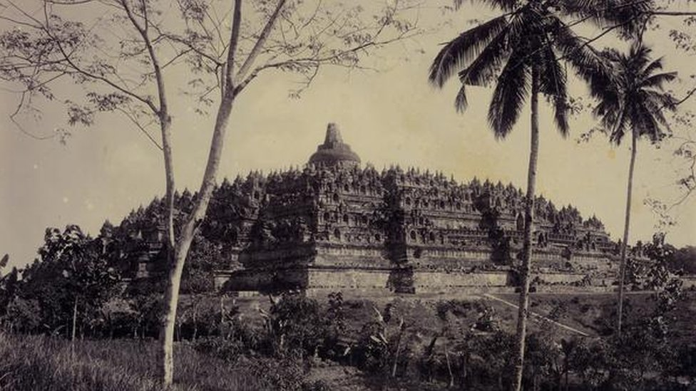
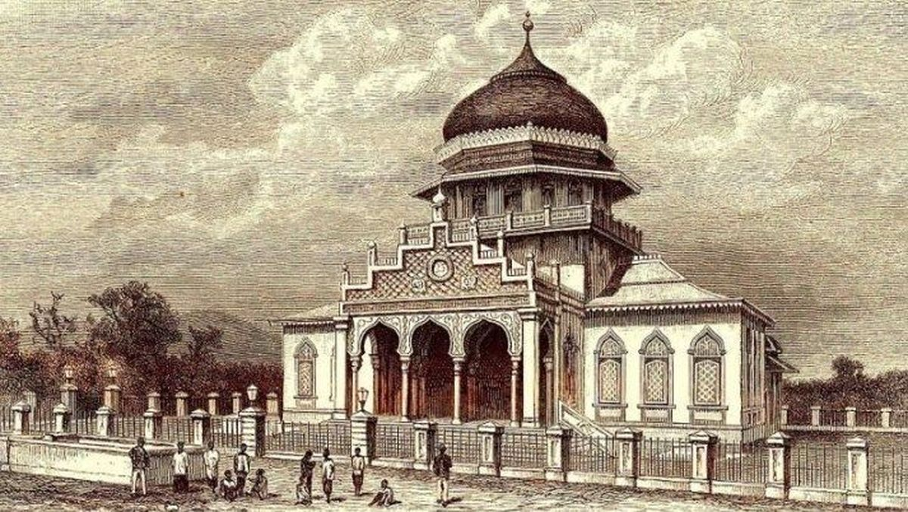
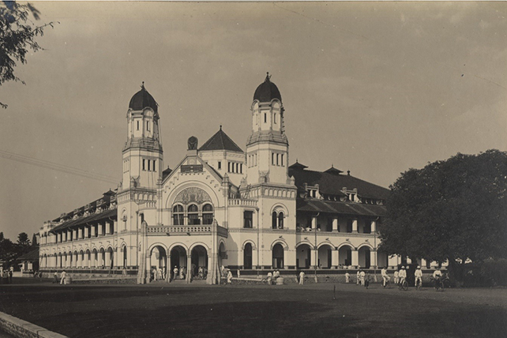
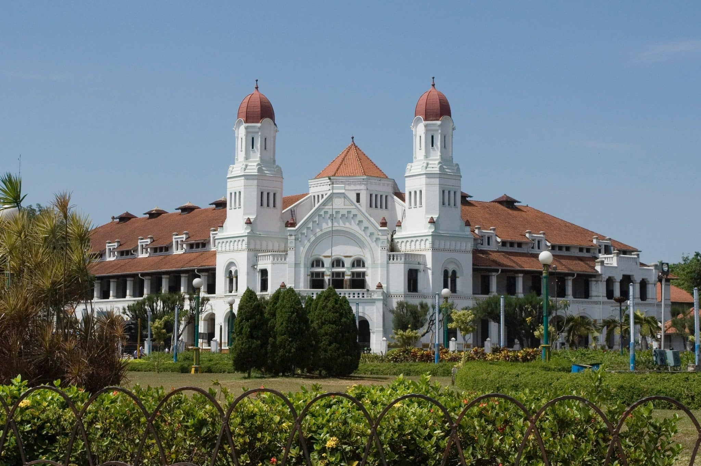

Mengungkap Jejak Peradaban dan Budaya Nusantara
Dari Kerajaan Kuno hingga Provinsi Modern
Jawa Tengah telah menjadi pusat peradaban sejak ribuan tahun lalu. Bukti-bukti arkeologis menunjukkan adanya kehidupan manusia purba di situs Sangiran. Pada abad ke-7 hingga ke-10 Masehi, wilayah ini menjadi pusat kerajaan-kerajaan besar seperti Mataram Kuno yang melahirkan candi-candi megah Borobudur dan Prambanan, mencerminkan akulturasi Hindu-Buddha yang kaya.

Setelah keruntuhan Majapahit, Mataram Islam muncul sebagai kekuatan dominan di Jawa. Dengan pusat di Kotagede, kemudian Plered, Kesultanan Mataram Islam menyebarkan pengaruhnya ke seluruh Jawa, termasuk Jawa Tengah. Periode ini ditandai dengan perkembangan seni, sastra, dan arsitektur Islam Jawa yang khas, seperti masjid-masjid kuno dan tradisi pesantren.

Abad ke-18 hingga ke-20 menjadi masa kolonialisme Belanda yang membawa perubahan besar dalam struktur sosial dan ekonomi. Jawa Tengah menjadi salah satu pusat perkebunan dan industri. Setelah proklamasi kemerdekaan Indonesia pada 17 Agustus 1945, Jawa Tengah secara resmi menjadi salah satu provinsi di Republik Indonesia, memainkan peran penting dalam perjuangan mempertahankan kemerdekaan dan pembangunan bangsa.

Saat ini, Jawa Tengah terus berkembang sebagai salah satu provinsi terpadat dan terkaya budaya di Indonesia. Dengan ibu kota di Semarang, provinsi ini menjadi perpaduan harmonis antara tradisi luhur, kemajuan ekonomi, dan keindahan alam. Berbagai upaya terus dilakukan untuk melestarikan warisan budaya sekaligus mendorong inovasi dan pariwisata.
